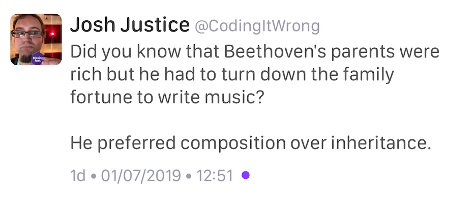

2019-07-04
http://componentsprogramming.com/elements-of-programming-authors-edition/
https://www.reddit.com/r/cpp/comments/c6fjjg/elements_of_programming_authors_edition/
Alex Stepanov and Paul McJones have just released Elements of Programming Authors’ Edition.
PDF download:
http://elementsofprogramming.com/
https://www.reddit.com/r/cpp/comments/c5vnhw/clion_20192_eap_brings_experimental_lldbbased/
https://github.com/sharkdp/dbg-macro
https://www.reddit.com/r/cpp/comments/c2ysa7/a_dbg_macro_for_c/
https://doc.rust-lang.org/std/macro.dbg.html
Microsoft mimalloc is a compact general purpose allocator with excellent performance.
https://github.com/microsoft/mimalloc
Mimalloc: Free List Sharding in Action
https://github.com/SerenityOS/serenity (BSD-2-Clause)
https://www.reddit.com/r/programming/comments/c13vph/serenityos_a_marriage_between_the_aesthetic_of/
(aka The Client-Attorney Idiom)
https://awesomekling.github.io/Serenity-C++-patterns-The-Badge/
class Foo;
class Bar { public: void special(int a, Key<Foo>); };
Bar().special(1, {}); // at call site in FooArticle by Andreas Kling | Reddit
class [[clang::consumable(unconsumed)]] CleverObject {
public:
CleverObject() {}
CleverObject(CleverObject&& other) { other.invalidate(); }
[[clang::callable_when(unconsumed)]]
void do_something() { assert(m_valid); }
private:
[[clang::set_typestate(consumed)]]
void invalidate() { m_valid = false; }
bool m_valid { true };
};https://stackoverflow.com/questions/24109737/what-are-some-uses-of-decltypeauto
https://github.com/libtom/libtomcrypt
Article by Anthony Williams
https://www.justsoftwaresolutions.co.uk/cplusplus/hidden-friends.html
namespace A{
class X{
public:
X(int i):data(i){}
private:
int data;
friend bool operator==(X const& lhs,X const& rhs){
return lhs.data==rhs.data;
}
};
}Article by Anthony Williams
https://www.justsoftwaresolutions.co.uk/cplusplus/strong_typedef.html
https://github.com/anthonywilliams/strong_typedef ()
using transaction_id =
jss::strong_typedef<struct transaction_tag, std::string>;
bool is_a_foo(transaction_id id)
{
auto &s = id.underlying_value();
return s.find("foo") != s.end();
}Blog post by Peter Sommerlad
https://accu.org/content/conf2014/Howard_Hinnant_Accu_2014.pdf
Rule of Zero:
Code that you do not write cannot be wrong.
https://github.com/SanderMertens/bake (GPLv3)
A cargo-like buildsystem and package manager for C/C++
Magic.
https://blog.trailofbits.com/2019/06/27/use-constexpr-for-faster-smaller-and-safer-code/
https://www.reddit.com/r/cpp/comments/c646ng/use_constexpr_for_faster_smaller_and_safer_code/
https://github.com/trailofbits/constexpr-everything (Apache 2.0)
https://www.reddit.com/r/cpp/comments/c6ag3l/how_to_try_the_new_coroutines_ts/
/await /std:c++latesthttps://www.reddit.com/r/cpp/comments/c6rnel/discussion_member_variable_naming/
m_foofoo__foohttps://www.reddit.com/r/cpp/comments/c6gtd4/how_do_you_get_the_benefits_of_rust_in_c/
https://www.reddit.com/r/cpp/comments/c6l3eg/how_do_c_developers_manage_dependencies/
Through much pain and anguish.
https://www.reddit.com/r/cpp/comments/c6vnb3/just_started_learning_c_coming_from_python_and/
The new GCC compiler with colour highlighting is a little bit better at pointing out errors. It's generally quite helpful for pure C/C++ until you make an error with the standard library and you get 200 lines about std:: whatever<random characters>
In C++ a trick I always use when the error message is massive is to just focus on the first error.
Now you write something like TD<decltype(thing)> and the error message tells you the type of thing (as deduced by decltype, of course, but in this case that's probably what you want).
https://www.reddit.com/r/cpp/comments/c75ipk/why_stdexpected_is_not_in_the_standard_yet_is_it/
std::expected https://github.com/TartanLlama/expectedhttps://github.com/hellozee/errors
https://www.reddit.com/r/cpp/comments/c7il5n/an_idiots_attempt_to_do_a_go_like_error_handling/
It looks like you invented something similar to
std::expected.
https://www.reddit.com/r/cpp/comments/c68457/simplify_your_code_with_rocket_science_c20s/
https://blog.jetbrains.com/rscpp/better-ways-testing-with-doctest/
https://dev.to/taillogs/the-best-book-to-read-as-a-developer-1h4m
https://www.reddit.com/r/programming/comments/c8aaov/the_best_book_to_read_as_a_developer/
https://medium.com/@bkey76/splitting-a-string-in-c-23e2547e6451
